Pourquoi Sablio
Sablio réunit au même endroit l’emploi du temps, les devoirs et l’agenda (rendez-vous, sport, musique). Il est pensé pour les élèves et les étudiants qui ont du mal à se repérer dans le temps.
Le temps y est visible et relatif : « encore 28 min », « pour demain », « il te reste 2 soirs ». On sait ce qui se passe maintenant, ce qui vient ensuite, et ce qu’il faut préparer.
- Fonctionne sans connexion, une fois ouvert une première fois.
- Aucun compte : les données restent sur l’ordinateur.
- S’installe comme une application, sans droits d’administrateur (Edge, Chrome).
Les vues
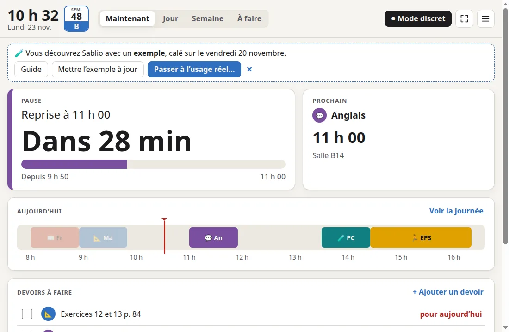
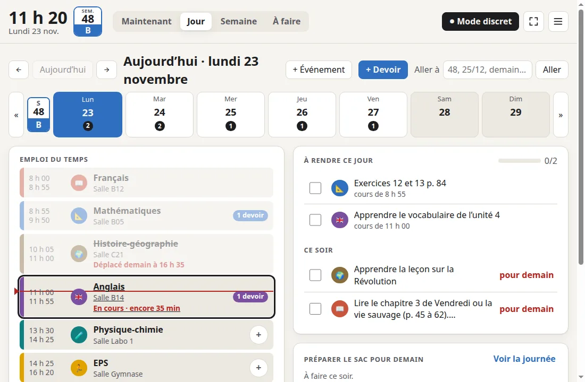
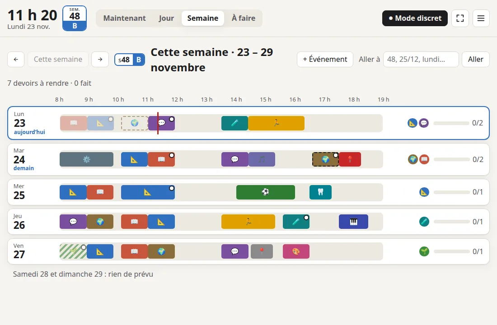
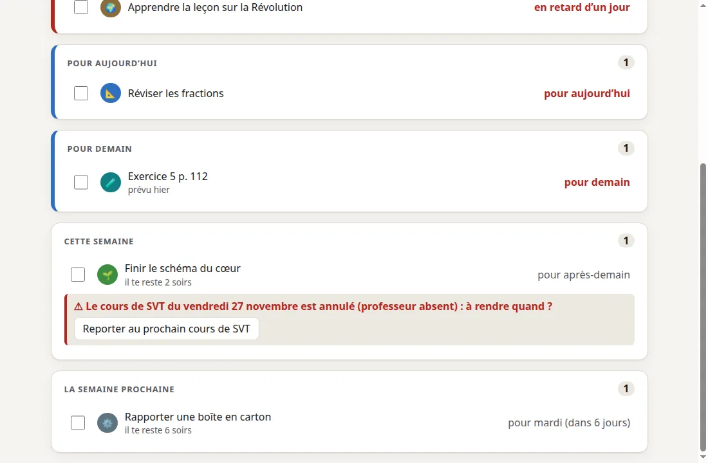
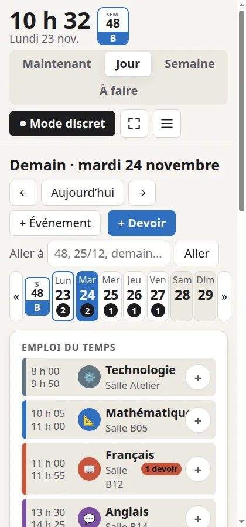
Les devoirs
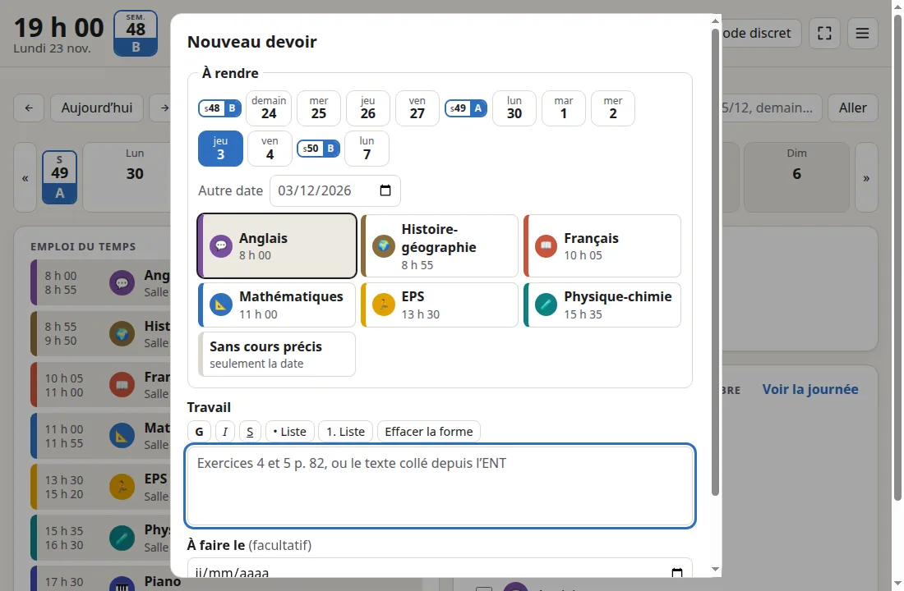
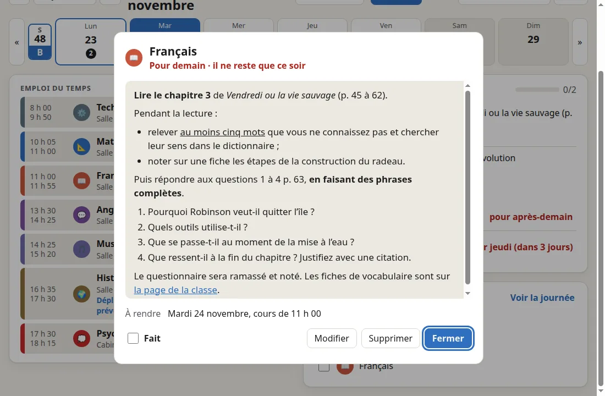
Un devoir suit son cours : si le cours est déplacé, le devoir suit ; s’il est annulé, Sablio le signale et propose de le reporter au cours suivant. Le soir, « Préparer le sac » liste les matières du lendemain et leur matériel.
Cours, rendez-vous et vacances
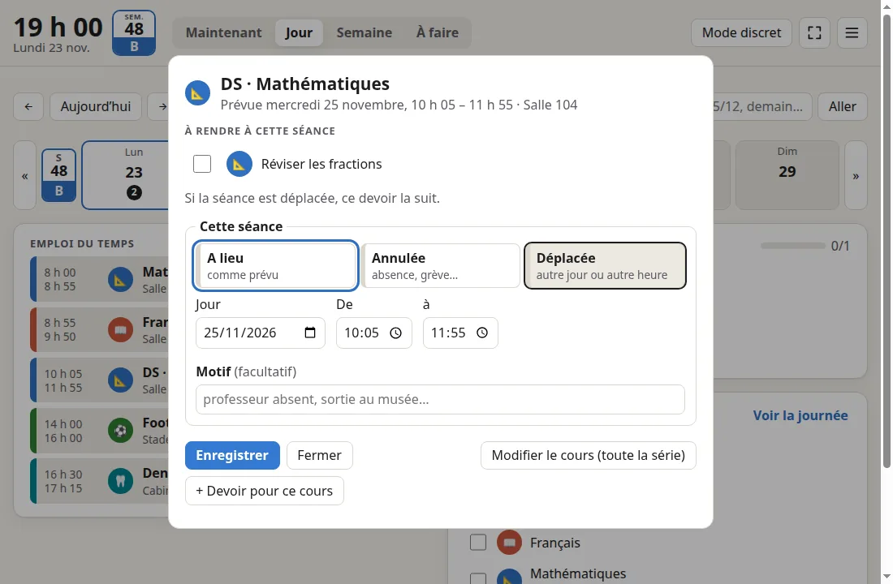
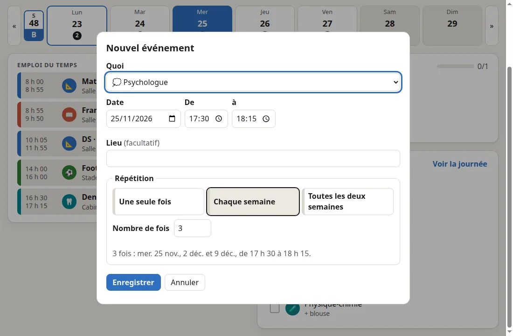
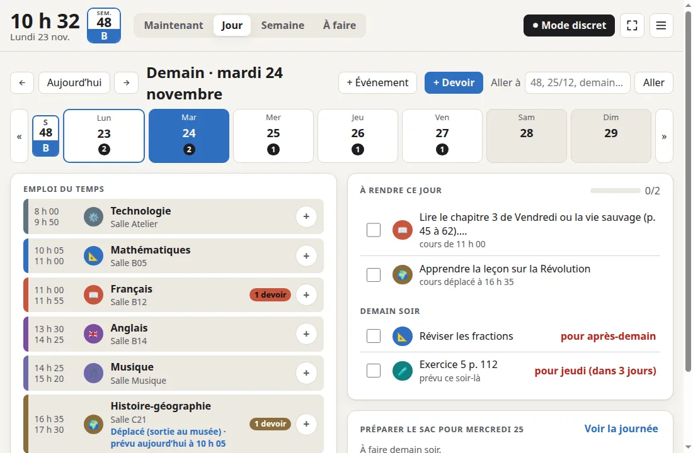
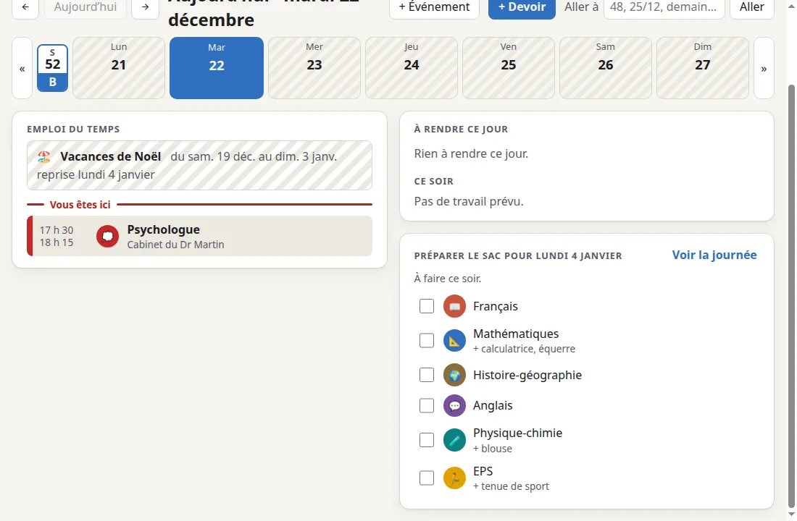
Commencer
- Découvrir. Au premier lancement, Sablio s’ouvre sur un exemple (une semaine de collège), signalé par un bandeau. On peut tout essayer.
- Passer à l’usage réel. Dans le bandeau, « Passer à l’usage réel… » : effacer l’exemple (la liste des matières est gardée) ou garder ce qui a déjà été adapté.
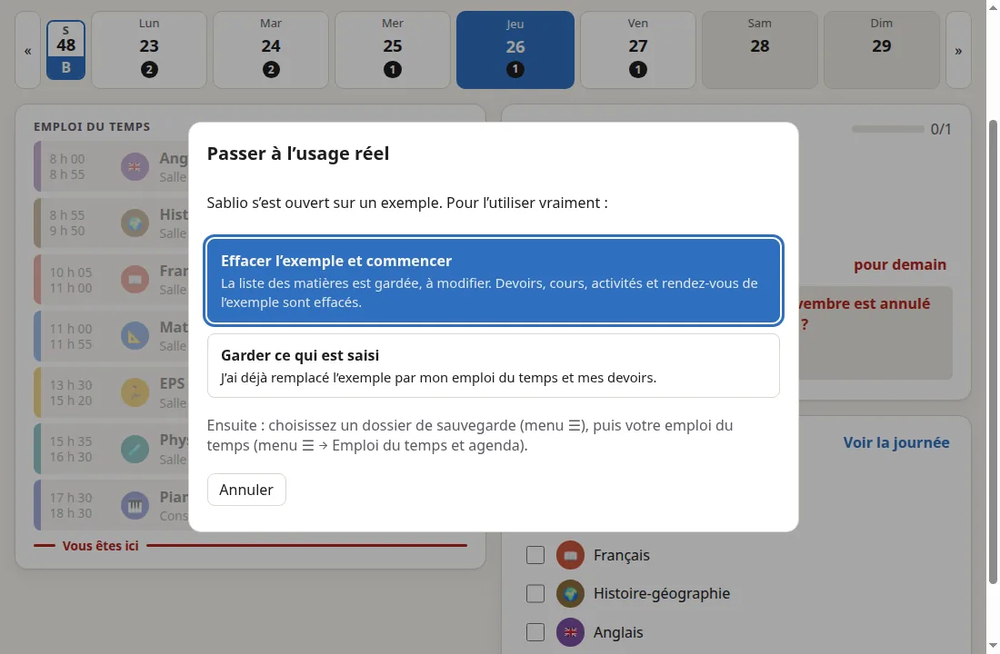
- Choisir un dossier de sauvegarde (menu ☰) : une clé USB ou un dossier OneDrive. Sablio y écrit une copie par jour et garde les dix derniers jours.
- Saisir l’emploi du temps : menu ☰ → Emploi du temps et agenda. Les cours de la semaine type, les semaines A et B, la zone de vacances, les activités. Pour un nouveau cours, les horaires déjà saisis sont proposés : un clic remplit le début et la fin.
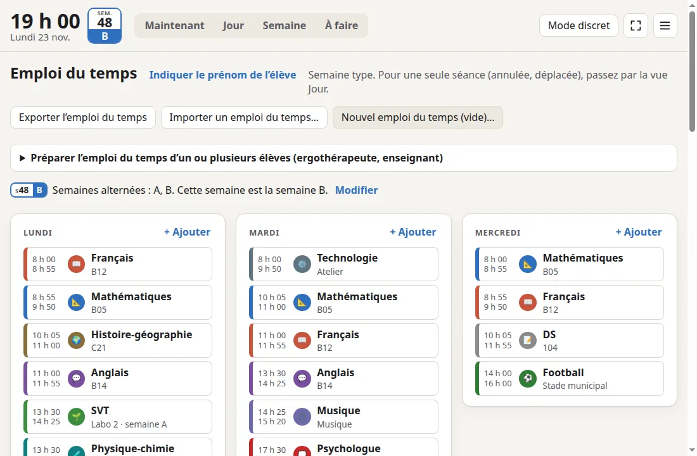
- Installer l’application : dans Edge, l’icône « Installer » de la barre d’adresse (ou menu ☰ → Installer l’application). Sablio s’ouvre alors dans sa propre fenêtre, depuis le menu Démarrer.
Il existe aussi une version Windows à télécharger (prototype) : télécharger Sablio pour Windows, décompresser l’archive, puis lancer Sablio-prototype.exe. Rien n’est installé. Cet exécutable n’est pas signé : sur Windows 11, le Contrôle intelligent des applications peut le bloquer. Ne pas désactiver ce contrôle (il ne se réactive souvent qu’en réinstallant Windows) ; utiliser plutôt l’application installée depuis Edge, ci-dessus. Les données de la version Windows sont séparées de celles du navigateur : on passe de l’une à l’autre par une sauvegarde.
Pour les adultes
- Verrou (facultatif) : un code à 4 chiffres protège l’emploi du temps et les réglages. L’élève garde ses devoirs, peut ajouter ses propres rendez-vous et basculer le mode discret. Code oublié : page de secours.
- Ergothérapeute, enseignant : on peut préparer l’emploi du temps d’un élève dans son propre Sablio, l’exporter dans un fichier (menu ☰ → Emploi du temps et agenda) et l’envoyer à la famille, qui l’importe. Le fichier ne contient ni les devoirs ni le code du verrou ; il peut contenir des rendez-vous de soin : à transmettre comme une donnée de santé.
Données et confidentialité
- Tout reste dans le navigateur de l’ordinateur : pas de compte, pas de serveur, aucune donnée envoyée.
- Effacer les données de navigation du site efface Sablio : la sauvegarde dans un dossier est la vraie protection. On restaure depuis menu ☰ → Réglages → Données.
- Chaque élève utilise Sablio dans sa propre session de l’ordinateur.